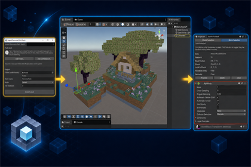

UNITY 6 / URP
Voxel workflow toolkit
Voxels At Work
Turn Litematic schematics into editable Unity worlds. Import resource packs, preview directly in the Editor, edit blocks, save changes, and synchronize compact deltas.
Explore the asset